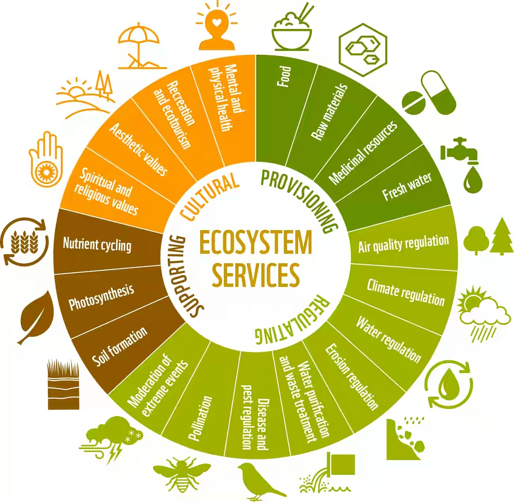
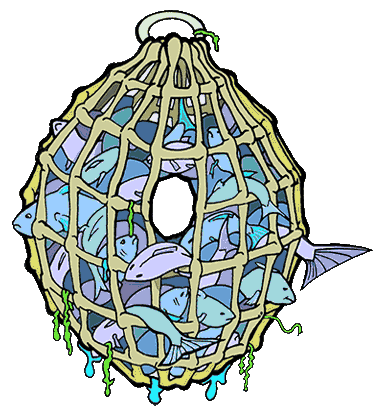
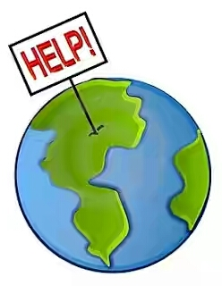

If biodiversity is healthy,will provide the following ways- |
|---|
|  |
- Ecosystem services
- Protection of water resources
- Soils formation and protection
- Nutrient storage and recycling
- Pollution breakdown and absorption
- Contribution to climate stability
- Maintenance of ecosystems
- Recovery from unpredictable events
|
Biological resources
- Food
- Medicinal resources and pharmaceutical drugs
- Wood products
- Ornamental plants
- Breeding stocks, population reservoirs
- Future resources
- Diversity in genes, species and ecosystems
|
 |
|  |
Social benefit, such as
- Research, education and monitoring
- Recreation and tourism
- Cultural values
|